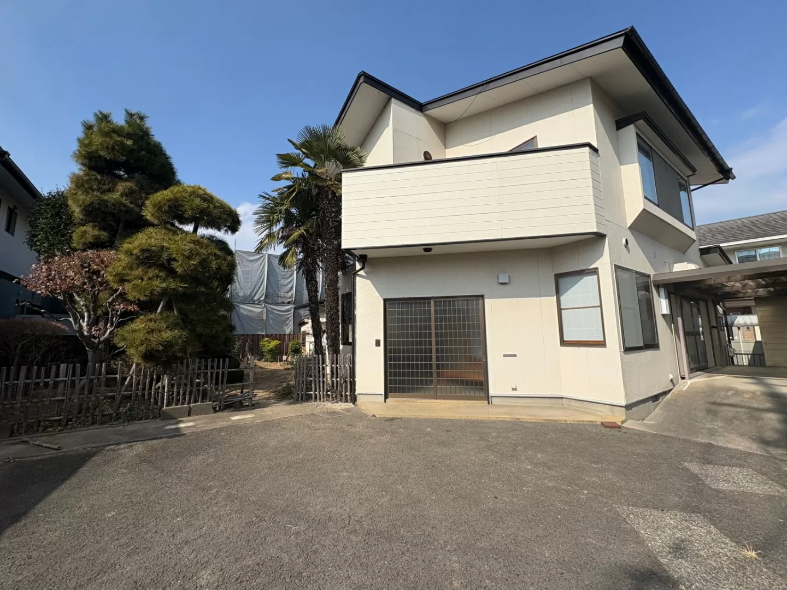
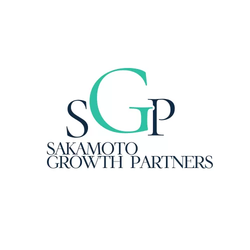

問い合わせが増えない
WebやLPを作ったのに、問い合わせが少なく、新規顧客が増えない。
仙台・東北の中小企業の社長へ。
合同会社SGPは、LP・LINE・CRM・生成AIを組み合わせ、問い合わせから受注、業務改善までの仕組み化をご支援します。

Problems
WebやLPを作ったのに、問い合わせが少なく、新規顧客が増えない。
LINEやメール対応が後回しになり、対応漏れや機会損失が発生する。
WebやLINE、CRMを導入したが、成果につながっていない。
やるべきことは分かっていても、時間がなく後回しになっている。
生成AIに興味はあるが、自社でどう使えるのかイメージがつかない。
Services
「AIを入れる」ではなく、売上・業務効率・意思決定を改善するための実装支援です。
現状の課題を整理し、最初の方向性をご提案します。
問い合わせ・来店を増やす導線を設計・実装します。
問い合わせ管理と業務フローを仕組み化します。
生成AIやRAGを活用し、業務の効率化を支援します。
Before / After
守秘義務に配慮し、各社の状況や代表個人としての経験をもとに一部抽象化しています。
LPが弱い
問い合わせが少ない
新規顧客につながりにくい
LPを改善
導線設計で改善
問い合わせ増加を目指す
LINE / メール対応が属人化
対応漏れが発生
管理が煩雑
LINE自動応答を導入
CRMで一元管理
対応品質が向上
業務が属人化
手順が標準化されていない
ミスが発生しやすい
テンプレ・マニュアル化
教育コストを削減
品質安定化
AIの使い方が分からない
情報が散在
効果が見えない
業務に合うAIを検証
ナレッジを活用
業務効率を向上
Process
現状やお悩みをお聞かせください。
課題を整理し、改善の方向性をご提案。
最適なプランをお見積りして提示。
Web・ツール・仕組みを設計・実装。
効果を見ながら継続的に改善をサポート。
Strengths
課題整理から設計・実装まで一気通貫で支援します。
ナレッジチャット、AI議事録、検索基盤などの開発・検証経験があります。
React / Next.js / TypeScript / Python / FastAPI / AWS などに対応。
問い合わせ導線や顧客管理フローを含めて設計・実装します。
地域企業の特性・意思決定に寄り添って支援します。
※会社設立前の代表者個人としての経験を含みます。守秘義務に配慮し、内容を一部抽象化しています。
Price
FAQ
初回相談では、現状を伺ったうえで、改善の方向性を整理します。
はい。相談だけでも問題ありません。必要な場合のみ、改善提案と見積をご提示します。
はい。初回相談やスポット診断から始め、必要な範囲だけ実装できます。
仙台・東北エリアを中心に、全国オンライン対応も可能です。
プランによりますが、基本的には1ヶ月単位でご相談可能です。

Company
Latest News / Activity
会社の設立以降に開始・公開した事業、プロダクト、研究開発を記録しています。
まずは、社長の課題を聞かせてください。